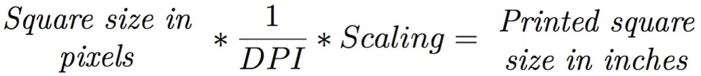
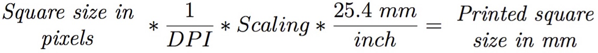
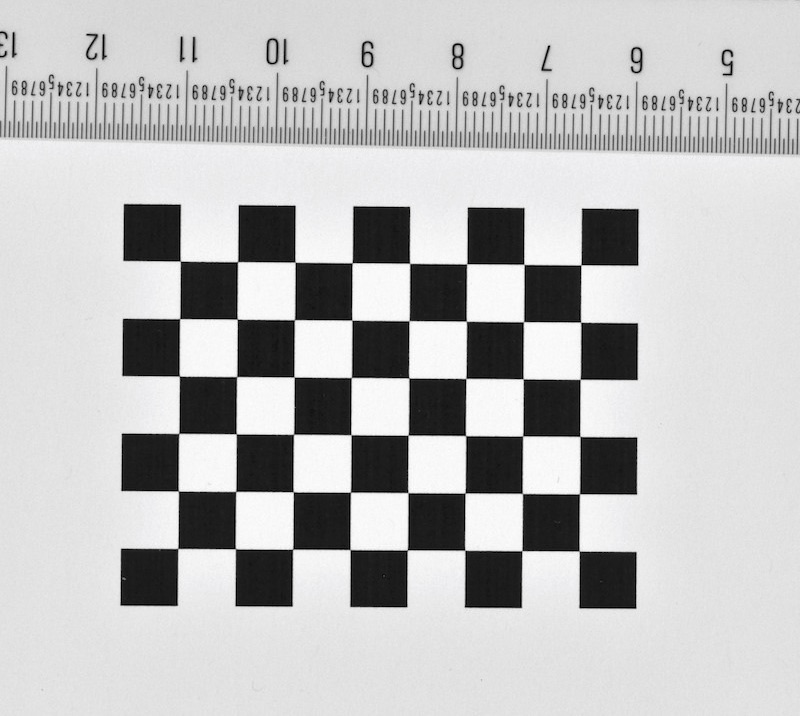

3.3 Measuring square size using DPI and scaling
We know that the squares were 180 pixels in the image file, but how large are the squares once they are printed on paper? We must know the size of the squares in real units (e.g. mm, inches) in order to properly scale our calibration. For a rough estimate, we can simply measure the length across the entire checkerboard and divide by the number of squares.
However, if we want to be more accurate we can calculate the real square size using known values from our printer scaling. Standard inkjet or laser printers (at least American printers) will print images at 72 dpi (dots per inch) by default. The DPI and scaling during printing determines how the size of an image in pixels will be converted into inches when the image is printed on paper. Thus, we can calculate the real square size using the square size in pixels, the printer scaling, and the printer DPI (dots per inch):
Or an additional conversion to mm can be added:

The square size of 180 pixels and 10% scaling used in this example were chosen purposely to create printed squares that are 0.25 inches (6.35 mm) along each side when printed at 72 DPI. Once you've measured the square size, it's good to write it on the front of the checkerboard lightly in small script with a pencil. This way you can read the square size directly from any photographs you take during the calibration.
